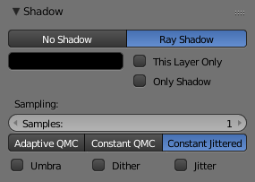

Area Ray-Traced Shadows¶
Adaptive QMC settings.
The Area light source can only cast ray-traced shadows. The ray-traced shadows settings of this lamp are mostly shared with other lamps, as described in Ray-traced Properties. However, there are some specifics with this lamp, which are detailed below:
Shadow Samples¶
- Samples
- This have the same role as with other lamps, but when using a Rectangle Area lamp, you have two samples settings: Samples X and Samples Y, for the two axes of the area plane. Note also that when using the Constant Jittered sample generator method, this is more or less equivalent to the number of virtual lamps in the area. With QMC sample generator methods, it behaves similarly to with Lamp or Spot lamps.
Sample Generator Types¶
- Adaptive QMC / Constant QMC
- These common settings are described in Shadow Panel.
- Constant Jittered
The Area lamp has a third sample generator method, Constant Jittered, which is more like simulating an array of lights. It has the same options as the old one: Umbra, Dither and Jitter.
Constant Jittered settings.
The following three parameters are only available when using the Constant Jittered sample generator method, and are intended to artificially boost the "soft" shadow effect, with possible loss in quality:
- Umbra
- Emphasizes the intensity of shadows in the area fully within the shadow rays. The light transition between fully shadowed areas and fully lit areas changes more quickly (i.e. a sharp shadow gradient). You need Samples values equal to or greater than 2 to see any influence of this button.
- Dither
- Applies a sampling over the borders of the shadows, similar to the way anti-aliasing is applied by the OSA button on the borders of an object. It artificially softens the borders of shadows; when Samples is set very low, you can expect poor results, so Dither is better used with medium Samples values. It is not useful at all with high Samples values, as the borders will already appear soft.
- Jitter
- Adds noise to break up the edges of solid shadow samples, offsetting them from each other in a pseudo-random way. Once again, this option is not very useful when you use high Samples values where the drawback is that noise generates quite visible graininess.
Technical Details¶
{kind=link}
Principles behind the Area light.
The Fig. Principles behind the Area light. picture helps to understand how the soft shadows are simulated.
"(a)" is the Area light as defined in Blender. If its shape is Square, then the softness of the shadow is defined by the number of light Samples in each direction of the shape. For example, "(b)" illustrates the equivalent case of an Area light (Square shape), with Samples set at 3 on the Shadow and Spot panel.
The Area lamp is then considered as a grid with a resolution of three in each direction, and with a light "dupliverted" at each node for a total of nine lights.
In case "(a)", the energy E is E/1, and in case "(b)", the energy of each individual pseudo-light is equal to E/ (nbr. of lights). Each pseudo-light produces a faint shadow (proportional to its energy), and the overlay of the shadows produces the soft shadow (it is darker where the individual shadows overlap, and lighter everywhere else).
Hints¶
You will note that changing the Size parameter of your area lamp does not affect the lighting intensity of your scene. On the other hand, rescaling the lamp using the S in the 3D View could dramatically increase or decrease the lighting intensity of the scene. This behavior has been coded this way so that you can fine-tune all your light settings and then decide to scale up (or down) the whole scene without suffering from a drastic change in the lighting intensity. If you only want to change the dimensions of your Area lamp, without messing with its lighting intensity, you are strongly encouraged to use the Size button(s) instead.
If your computer is not very fast, when using the Constant Jittered sample generator method, you could find it useful to set a low Samples value (like 2) and activate Umbra, Dither, and/or Jitter in order to simulate slightly softer shadows. However, these results will never be better than the same lighting with high Samples values.